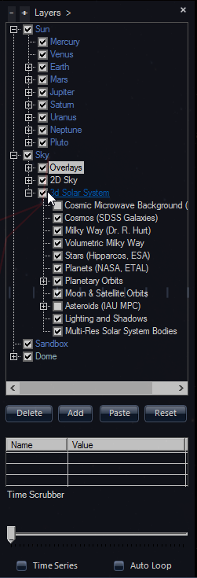
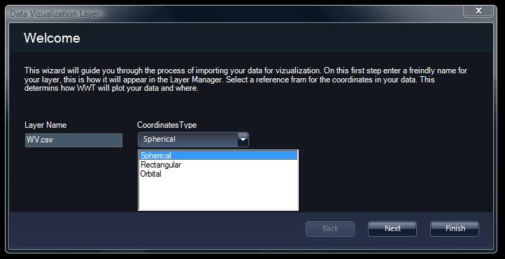

Note: This documentation is preliminary and subject to change.
The WorldWide Telescope is a software environment that enables your computer to function as a virtual telescope, combining terabytes of imagery from such famous telescopes as Hubble, Chandra and Spitzer into one vast panorama of the universe.
WorldWide Telescope allows seamless panning and zooming around the night sky, our Solar System, and other space-orientated panoramas, such as the pictures taken of the surfaces of the Moon and Mars. Explore the sky at multiple wavelengths: see the x-ray view of the sky and zoom into bright radiation clouds, and then cross-fade into the visible light view and discover the cloud remnants of a supernova explosion from a thousand years ago. Switch to the Hydrogen Alpha view to see the distribution and illumination of massive primordial hydrogen cloud structures lit up by the high energy radiation coming from nearby stars in the Milky Way.
For a dazzling educational experience, our Solar System is modeled in three dimensions, with the planets rotating and orbiting the Sun. Watch the majestic beauty of Saturn's rings or the distant orbit of the dwarf planet Pluto as they track across the sky in their accurately modeled days and years. Accelerate the simulated time to plan a visit to the best spot for the next solar or lunar eclipse.
Newcomers to WorldWide Telescope are recommended to browse the growing number of Guided Tours of the sky by astronomers and educators from some of the most respected observatories and planetariums. Most of the features can be discovered simply by using the program. This documentation is provided as a resource to help describe what is going on, and to help locate the features that this project has to offer. There are two versions of WorldWide Telescope, a Windows application and a web client. This documentation set describes both, where necessary indicating where a feature only applies to one. The essential differences between the two are that the Windows version is downloaded and installed first, then run, and has a few more features. The web client is not downloaded and installed, is based on HTML5, and has fewer features but can be customized.
WorldWide Telescope is created by Microsoft Research using the Microsoft high performance Visual Experience Engine , and the project is dedicated to legendary researcher Jim Gray, without whom this project would not have happened. WorldWide Telescope is released as a free resource to the astronomy and education community with the hope that it will inspire and empower people to explore and understand the universe like never before.
WorldWide Telescope is under development at Microsoft Research. Feel free to contact the development team, or post comments on public forums.
To privately send a specific bug, issue, question or comment direct to the WorldWide Telescope team at Microsoft, go to WorldWide Telescope Support.
To publicly post a comment regarding the WorldWide Telescope, consider adding a comment to an appropriate entry in the WorldWide Telescope support forum.
For advanced users wishing to customize the WorldWide Telescope Web Control, refer to the WorldWide Telescope Web Control Script Reference, or to work with the data formats and files refer to the WorldWide Telescope Data Files Reference.
To see plans and instructions for building a planetarium suitable for a small class of students, refer to WorldWide Telescope Planetarium.
|
|
The following image shows the first view that will appear on running WorldWide Telescope. This section describes the layout, and how it changes depending on the selections of the user.
 |
Along the top of the screen is the main menu, with entries Explore, Guided Tours, Search, Community, Telescope, View and Settings. These entries are described in detail later on in the documentation, however the basic purpose of each entry follows. Note that the main menu items can be clicked on themselves, which has a different function than selecting the down arrow and opening up the menu contents.
|
| Hovering the mouse underneath the main menu item will display a down arrow. Clicking on this down arrow will open up the menu contents. Clicking on the main menu item itself (for example, clicking on the entry Explore) will change the appearance of the top panel, and not display the menu contents. |
The Top Panel is shown in the image below. It is a glass panel that displays a range of thumbnail images. Thumbnail images are there to be clicked on, with the underlying text helping identity the data.
 | In this top panel view, the user has selected the thumbnail Constellations, so the top panel now displays all 89 constellation entries. Astronomers will note that there are 88 constellations, however WorldWide Telescope treats the divided Serpens constellation as two. |
 | If there are more thumbnails than the top panel can display, the number of rows of thumbnails (with previous and next arrows) will appear to the far right of the panel. Select the arrows or use the mouse wheel to scroll through the options. |
Underneath the top panel is the main view! In this case the user has selected Constellations then Cassiopeia:
 |
The images of the sky are annotated with the outlines of the constellations. The constellation most central to the view is referred to as the selected constellation, and is outlined in yellow. The red lines display figures - in this case linking the main stars that make up the constellation. Cassiopeia is of course known for the five bright stars making up the large W.
The View Menu and the Settings Menu have options to change what lines are drawn, and their colors. The lines shown in the image above are the default for a sky view.
To navigate the main view the primary device is the mouse. Use the mouse wheel to zoom deep into outer space, and back. Hold down the left mouse button and drag to change the angle of the view.
Clicking the right mouse button brings up the Finder Scope, which can be dragged around the screen with the mouse to help identify objects. In the image below, it has been used to select one of the stars in Cassiopeia.
 |
Click the X in the top right corner of the Finder Scope to close it.
At the bottom of the screen there is the lower panel. This performs a variety of functions, the most significant of which are the Look At and Imagery entries.
The Look At list includes Earth, Planet, Sky, Panorama, and Solar System. This is the highest level list determining what to display. Selecting Solar System reveals the impressive 3D modeling of the Sun and Solar System planets (this is not currently available in the web control version of WorldWide Telescope). The Imagery list gives the range of data options given the selection made in the Look At list. For Solar System there is only one option. For Sky there is a large range of options, as there are many different wavelengths of light that can be recorded, in addition to the visible wavelength that we all see. Different wavelengths include x-ray, gamma, microwave, and so on. The most fascinating imagery is to most people the visible wavelength, but studies of the other wavelengths can reveal more specific information about what is happening, or has happened, to the stellar object.
Panorama is an interesting and slightly different selection. The range of imagery for this includes the pictures taken from different landing vehicles on the Moon and Mars. Selecting Earth gives the chance to examine our own planet closely, right down to streets and small geographic features.
The selections made in the Look At and Imagery lists greatly affects the relevance of other options (the View and Settings entries, for example), which are explained in detail later on in this guide.
Underneath these two list entries in the lower panel is the context list of thumbnails. A Context Search is carried out whenever the view is changed, and provides a thumbnail list of all the objects of interest in the current view. The more you zoom in, the shorter and shorter this list will become. For example, select Explore then Constellations then click on Corvus. The context list is shown in the image below:
 |
There are a lot of entries in the list, starting with the planet Saturn. This list does not only include the stellar objects in the constellation Corvus, but all those objects in the current view. They are sorted in order. The first items are the planets and named objects, the later ones often do not have a name other than their catalog entries - NGC4024 for example. If this list is long, which it often is, use the previous and next arrows to scroll through it. Notice too that the context list is populated when a view comes to a halt, it is often empty when the view is animating from one location to the next. The size of the contexts lists can be reduced by de-selecting items in the Context Search Filter.
 | Only stars and supernova will now appear in the context list - no black holes or neutron stars! |
The final elements of the lower panel are shown in the image below:
 |
The small up and down arrows can be used to show and hide the lower panel itself.
The pane to the far right of the lower panel shows the skyball (displaying the field of view relative to the celestial sphere), and the selected constellation. This pane also shows the parameters of the view - the right ascension, declination and field of view in degrees (60:00:00 in this example). You can drag the yellow rectangle around in the skyball to change the view. Click on the selected constellation to center the field of view on that constellation. |
Right ascension and declination are a well known space co-ordinate system for astronomers, but to newcomers to astronomy probably the best way to view them is as space longitude and latitude respectively. The field of view angle is at a maximum of 60 degrees, which gives a wide angle view of the sky. Zooming in can narrow this to a tiny percentage of one degree.
You can use the Layer Manager to specify which layers and overlays to display, as well as a number of other view-specific settings.
To Display the Layer Manager
To Add a Layer
Each view has its own node within the Layer Manager.

This completes the overview of the screen layout. The following sections go into much more detail on each individual topic.
Exploring the universe is the funnest thing you can do with WorldWide Telescope! This section covers the views that you can choose from, and shows you how to navigate within each view.
To select a view, use the Look At drop down list (at bottom left):
Use Earth view to explore our own planet from a viewpoint in space. To enter Earth view, select Earth from the Look At menu (bottom left).
To Control the View
Use tilt along with the Show Elevation Model setting in the Earth > Overlays node in the Layer Manager to get a fly-over effect, and see mountain ranges and river valleys in three dimensions.
Use View > Reset Camera to restore the default view and settings.
Use the Imagery menu to choose from the available imagery options, including aerial, streets, hybrid and nighttime views.
| This image of Hawaii is obtained from the Virtual Earth Hybrid imagery: |
 |
There are several imagery options for the Earth, including aerial photography, streets, a hybrid of these two, and a night view. The night imagery is the simplest, yet it reveals information that the other views do not convey as well. In this tutorial we'll examine relative population density by comparing night and day images.
Rotate the Earth using the mouse until southwest Australia is in view, then zoom in to the following location:

Without changing the zoom or pan settings, change the Imagery to Earth at Night. Notice that the same
view angle is maintained even though the imagery has changed. Try toggling the Imagery to Bing Maps Streets, then back to Earth at Night again. Human population density is readily revealed with the glow of artificial light in the night view. The bright areas on the night map exactly matches the city of Perth named on the Bing Maps Streets view.

Try this comparison in different locations around the world!
Use Planet view to explore the other planets and some of the moons of the Solar System. To enter Planet view, select Planet from the Look At menu (bottom left).
To Control the View
Use tilt along with the Show Elevation Model setting in the Earth > Overlays node in the Layer Manager to get a fly-over effect, and see mountain ranges and river valleys in three dimensions.
Use View, Reset Camera to restore the default view and settings.
| Some moons are available under the Planet imagery, including Io, one of the best known of Jupiter's many moons: |
 |
Olympus Mons is the tallest mountain on Mars (and indeed the Solar System). At a colossal 17 miles high it is three times higher than Everest. The following tutorial locates the mountain:
 |
 |
 |
Highly detailed surface images and elevation data are currently only available for the Earth, our Moon, and Mars. However, there is enough detail on many of the solar system planets and moons to locate their most notable features.
To View a Planet
Much more imagery data is available under Explore > Collections > Planets/Moons.
| Mercury is known for its craters and ridges, volcanoes and lava flows. The largest features are the very wide craters. One of these, the Caloris Basin (30.5 Lat 170.2 Lng) is particularly interesting because of the so called Chaotic terrain that exists diametrically opposite to it (-30.5 Lat -9.8 Lng). There is a very thin atmosphere consisting largely of sodium. Surface temperatures range from −183 (at night and in the deepest craters) to 427 Celsius (when the Sun is directly overhead). | No moons |
| Venus comes closer to the Earth than any
other planet in size, and closest to the Earth in distance. Its surface
includes mountains, volcanoes, rift valleys, and two continents of
higher elevation than the rest. It's surface is however extremely hot --
around 435 Celsius -- and is partly obscured by clouds of sulfuric acid.
There is no evidence of water erosion on the planet, though there is
small amounts of water vapor in the atmosphere. Notice that Venus has fewer craters than Mercury, Mars or our Moon, which suggests the planet surface is relatively young (about 1 billion years old), though the dense atmosphere may also protect the surface to a degree. | No moons |
| Refer to Earth. |
Our solitary moon is old and heavily cratered, one of the best known
craters is called Copernicus. It can be located visually using the Explore >
Collections > Planets/Moons data (noting the three
craters in a near line), or from its latitude and longitude: |
| See the description in the Locating Olympus Mons tutorial. | Mars has two moons, Phobos and Deimos. Some image
data is available, find the thumbnails in the Explore >
Collections > Planets/Moons data. Currently they are not
represented in the Sky or SolarSystem
views. Deimos is notable for its smooth surface: |
| Jupiter's surface is gaseous so
there are no mountains or valleys to speak of. The most
prominent surface features are the banding and the spots --
with the Great Red Spot being the largest of the spots with
a diameter that exceeds that of the Earth. The spots are
swirling clouds of gas, often referred to as storms but are
surprisingly stable, changing little in size in the years
they have been observed. The banding is caused by clouds of
different colors. The darker brown and red bands are called
belts, and the lighter yellow and white bands
called zones. Jupiter's atmosphere is mostly hydrogen with some helium, and traces of many other gases. |
Jupiter has four large moons, Io, Europa, Ganymede (the
largest moon of the Solar System) and Callisto. Image data
for all four
exists in the Planet, Sky
and SolarSystem views. Jupiter has many other satellites, totaling at least 63, though none of the others match the size of the four largest. Ganymede has ancient dark surface matter, and not quite so ancient lighter surface matter, marked with grooves and ridges:  |
| Saturn's surface is relatively bland, consisting mostly of hydrogen and helium gas. It is known for its high winds, up to 1000 mph, and lightning that is one million times more powerful than that on Earth. It is the most beautiful planet in the Solar System because of its spectacular rings, believed to have been formed by a comet or other object passing too close and being pulled apart into tiny fragments of ice and dust. The creation and rotation of the rings cannot be explained solely by gravity, as there appears to be an electromagnetic interaction between dark spokes in the rings that rotate almost synchronously with the magnetosphere of the planet. | Saturn has a large number of
moons, 53 currently have names, though many are small. Partial imagery exists in the Explore > Collections > Planets/Moons data for Mimas, Enceladus, Tethys, Dione, Rhea, and Iapetus. Mimas is known for its huge impact crater -- 62 miles in diameter:  |
| Another gas giant, the surface of Uranus consists of blue-green clouds -- colored by tiny crystals of methane. Similar to Jupiter and Saturn the atmosphere is mostly hydrogen and helium. | Uranus has at least 21 satellites. Partial imagery
exists for the largest five -- Ariel, Umbriel, Titania, Oberon and
Miranda -- in the Explore > Collections > Planets/Moons
data. Miranda has some strange rocky surface features called ovoids, that have near parallel ridges and canyons. One of these ovoids is clearly visible in the partial data:  |
| Neptune is mainly made up of hydrogen gas with some helium. Its deep blue color comes from trace methane ice in the atmosphere. Similar to Jupiter it is known for its surface storms that appear as dark irregularly shaped spots. | Neptune has at least 13 moons. The largest, Triton, is the coldest known place in the Solar System, at -235 Celsius it is less that 35 degrees above Absolute Zero. This is due in part to the reflective nature of the surface of Triton. No image data currently exists in WorldWide Telescope for any of the moons. |
| Recently reclassified as a dwarf planet, Pluto is actually a binary system, rotating in synchronous orbit with one of its moons -- Charon -- with the center of rotation being outside of either body's mass. Pluto is now widely considered to be the largest member of the Kuiper Belt -- a region just to the outside of the Solar System containing many smaller objects. Pluto's surface is largely rock and ice, so is cratered, and it is also known for its bright South pole. | There are two known moons in addition to Charon, named Nix and Hydra. None of the three are currently represented in WorldWide Telescope. |
The following programs have been built using the WorldWide Telescope Web Control Script Reference, and enable detailed searching of the surfaces of many planets and moons.
Demo Name | Description | Link |
| WWT Web Client Hi-Def Planet Explorer |
Provides a range of options for exploring the surfaces of our Moon and Mars. Thousands of surface features, including craters, mountains, valleys, seas, plains, ridges and depressions,
are available to step through, sort, search and view.
Make sure to select the correct planet or moon in the Look At and Imagery drop down lists, after starting the program. | Run |
| WWT Web Client Distant Planet Explorer |
Provides a range of options for exploring the surfaces of Mercury, Venus, and the four main moons of Jupiter: IO, Ganymede, Europa and Callisto. Hundreds of surface features,
are available to step through, sort, search and view.
Make sure to select the correct planet or moon in the Look At and Imagery drop down lists, after starting the program. | Run |
Use Sky view to explore the celestial sphere, the vast expanse above and around us. To enter Sky view, select Sky from the Look At menu (bottom left).
To Control the View
| The Crab Nebula is one of the best known features of the constellation Taurus. It is a supernova remnant: |
 |
| By default the Explore > Collections options are shown in the top panel. You can use the Collections panel to explore image data in WorldWide Telescope. Thumbnails in the Collections panel behave like files and folders; each thumbnail links either to another set of collections, or to a single piece of image data.
These images are detailed individual (or composite) pictures of the objects, and will be rendered over the background sky image. Note the down arrow in the lower right of the image. This can be used to show a much larger top panel, with many more thumbnails present. Interesting comparisons can be made by using the cross-fade slider (located in the lower panel) to compare the image you have loaded with the Sky Survey. The context list in the lower panel is updated each time the view is changed. A single click in a context thumbnail (shown in the lower panel) will smoothly navigate to that location. Double clicking will skip straight to the location, NGC2555 in the example below. Hovering the mouse over the thumbnail will illuminate the object with an annotation in the main view (if the object is visible in the main view).  If there are too many context thumbnails to scroll though, use the up arrow to show many more of them: Click in the globe, then drag the mouse, to change the field of view relative to the Celestial Sphere. Click in the constellation box to center the view on that constellation -- Draco in this example:  All of the The View Menu options apply to the Sky view, except the 3d Solar System pane. In particular refer to the Observing Location pane to select a different viewpoint on Earth. Also check the Constellation Lines and Experience options in the The Settings Menu. Use View > Reset Camera to restore a default view and settings. |
A conjunction occurs when two or more objects in the sky appear close to each other. The following tutorial tracks a conjunction between the crescent Moon, Jupiter and Venus that occurred on 1st December 2008.
0 0 0 local time (midnight), or 8 0 0 UTC.
 |
Conjunctions are a visually interesting phenomenon that usually involve near-Earth objects. To examine a range of distant features of the known universe, try the following tutorial, or select the examples in the Context Search table.
In this tutorial you'll learn how to use the search features of WorldWide Telescope to locate our stellar neighbors.
 | The image shows that there can be some discrepancy between the
recorded position of a star, and its location on a photograph. Proxima Centauri has an apparent magnitude of around 11.05. This is on a Stellar Brightness logarithmic scale (the higher the numbers, the lower the brightness). A value of 11 is 2.5 times dimmer than a value of 10, which is 2.5 times dimmer than a value of 9, and so on. |
 |
Sirius has a brightness magnitude of -1.46. The second brightest star,
Canopus, has a magnitude of -0.72. This makes Sirius very nearly twice
as bright as Canopus. However, Canopus is 308 light years distant from us, and Sirius only 8.6 light years, so Canopus would appear much brighter if it were not so distant. |
 |
The Sagittarius Dwarf Elliptical Galaxy is very faint as it currently
resides on the opposite side of the galactic core of the Milky Way. It
is set to pass through the Milky Way and will probably be absorbed
entirely into the larger galaxy. |
 | Zoom in on the Star Forming Region in the Large Magellanic Cloud. Sometimes classified as irregular, this galaxy may have been a barred spiral galaxy before succumbing to the tidal forces of the gravity of the Milky Way. |
 | The Andromeda galaxy is a classic spiral galaxy. It has at least 19 satellite galaxies in orbit, including M32 highlighted in the image, with M110 - an elliptical galaxy containing millions of stars - visible above the main body. |
 |
The Triangulum, M33 or Pinwheel, galaxy may be remote but it is gravitationally bound to the Andromeda
galaxy. Andromeda is in the top right of this image, M33 just inside the boundaries of the constellation Triangulum in the lower center. |
1 33 50, and 30 39 36 into the RA and Dec boxes in the search panel. Click Go to navigate to the location.
|
|
 |
1 03 55
for RA and 21 53 06 for Dec, and click Go.
 |
The Pisces Dwarf galaxy appears only as the faint cloud between the
bright stars at the top and bottom of the image. This galaxy may be spherical or irregular. The light from the galaxy is blue-shifted, which indicates that it is moving towards the Milky Way. |
12 27 00 and Dec 12 43 00 into the search panel. Click
Go to see the last image in this tutorial -- the bright
objects in the image are very bright galaxies.
 | The elliptical galaxy Messier 87 is one of the brightest galaxies in the Virgo Cluster, and can be seen in the bottom left hand corner of the image. The two other very bright objects are galaxies M84 and M86. Most of the other bright objects in this image have been identified as galaxies, though a few of the less bright spots remain unidentified. |
Note: the Messier Catalog referenced in this tutorial can be viewed in full in the Web Client version of WorldWide Telescope, using the following program.
Demo Name | Description | Link |
| WWT Web Client Messier Catalog |
All 110 objects in this famous catalog can be viewed, displayed as a slide show, sorted and searched.
| Run |
This tutorial shows how to use WorldWide Telescope to plan an evening's astronomical observing. In the first set of steps, you'll learn how to set your location, and track the sun to determine the ideal time to begin viewing. Complete the tutorial by following the steps to help locate common objects in either the Northern Hemisphere, or Southern Hemisphere.
To Set Location and Determine Optimal Viewing Time
-18:00:00. Use reverse time if you overshoot! Now write down the Observing Time shown in the View panel.
 |
 |
 |
 |
That completes the Sky Tonight tutorial. Take your notes outside at the calculated time, and scan the skies!
 |
The bright star mentioned above, Rigil Kentaurus, along with its nearly-as-bright neighbor Hadar, are visible at the bottom of this image.
 |
That completes the Sky Tonight tutorial. Take your notes outside at the calculated time, and scan the skies!
In this tutorial WorldWide Telescope is used to demonstrate the purpose behind some of the most commonly used terms in astronomy.
Set the Look at box to Sky,and the Imagery to Digitized Sky Survey. Also ensure View from this location is not selected in the View pane.
Objects in the sky are located using right ascension (RA) and declination (Dec). Right ascension in space is equivalent to longitude on the Earth. Longitude is an east-west bearing from the Greenwich Meridian, right ascension is the east-west bearing from an equally arbitrary point in space - the point where the Sun crosses the celestial equator on the March equinox. The equinox is chosen because at this point the Earth is neither tilted towards or away from the Sun, but instead is vertically aligned with the Sun (the solstices occur when the tilt is at a maximum). The celestial equator is none other than the Earth's equator projected out into space, and the north and south celestial poles are simply our own poles projected out indefinitely. Where the Sun crosses the celestial equator both right ascension and declination are zero.
Declination is similar to latitude on Earth, measuring a north-south bearing. Objects above the celestial equator have a positive declination, objects below it a negative declination. The point where the Sun crosses the celestial equator is known as The First Point of Aries.
In Layer Manager under Sky > Overlays > Constellations, uncheck the boxes for Constellation Figures and Constellation Boundaries. Then, under Sky > Overlays > Grids, check the boxes for Equatorial Grid and Ecliptic Grid.
Open the Search panel, enter 0 for RA and 0 for Dec, then click Go.
 The track of the Sun across the sky is known as the ecliptic. The First Point of Aries should now be in the middle of your view. |
The right ascension and declination of celestial objects do not change, unless the position of the objects changes relative to the coordinate system which of course they do, but very slowly, so slowly that it is only necessary to revise the coordinate system every 50 years. Each time a coordinate system is fixed, it is called an epoch. The current epoch, and the only one supported in WorldWide Telescope, is the J2000 epoch - namely the position of the celestial objects and coordinate system at Noon on January 1st in the year 2000, at the Royal Observatory, Greenwich, England. The change to the J2000 epoch was made in 1984, as the positions of stars can be predicted accurately in advance of the actual year. There may of course be a change to the J2050 epoch, perhaps sometime after the year 2025.
Of course stars and all other objects do appear to move in the sky, as a result of the rotation and orbit of the Earth. At any one moment the position of an object in the sky can be referenced by its azimuth and altitude. Azimuth is similar to longitude or right ascension, in that it is an east-west bearing from true north. Altitude is an angle rather than a distance, it is the angle up or down from the horizon. By convention positive azimuth is to the east, negative to the west, and positive altitude is up from the horizon. Unlike right ascension and declination, azimuth and altitude change continuously. For example, open the Search panel, then enter Sirius in the search text box. When the bright star Sirius appears, zoom away from it until the view is from Earth (that is, minimize the zoom completely). Right-click on Sirius in the sky to bring up the Finder Scope.
 |
Note that the seconds values for the Altitude (Alt) and Azimuth (Az) of Sirius are changing, even when you look at the star in real time. In the View > Observing Time pane click the accelerated time button (the one with the "fast-forward" icon). The altitude and azimuth will now change quite quickly. Altitude and azimuth are very useful values when aligning a physical telescope from Earth to locate a particular star or planet. The values are different for every view point on Earth, hence the usefulness of right ascension and declination as a fixed coordinate system. |
The Magnitude entry on the Finder Scope refers to the apparent magnitude of the brightness of Sirius. For a description of what this means refer to the Stellar Brightness section, or work through the Tutorial: Visiting the Neighbors tutorial.
The Distance entry on the Finder Scope is the distance to the object in light years. A light year is an enormous distance. The speed of light in a vacuum is 186,282.397 miles per second (a light second), which works out to just under six trillion miles per year, approximately 5,878,500,000,000 (186.282.397 x 60 x 60x 24 x 365.2424) miles. The Sun is about 500 light seconds from Earth, the next nearest star is 4.2 light years away, or over 24 trillion miles. Occasionally space telescopes pick up events that help us visualize how sizeable a light year is in relation to the cosmos. For example, click Explore, then Hubble Studies, then click Supernova1987A .This will bring up a range of seven thumbnails. Click on the fifth, Supernova1987A - 28th November 2003. Now click on the sixth thumbnail, Supernova1987A - 12th December 2004.
 |
 | Though not taken exactly one year apart these two supernova images just might be showing one light year in the increased radius of the explosion. |
The light year is the most common unit of measurement in astronomy, but not the only one. Open the Search panel, then enter Neptune into the search text box. Click the thumbnail to show the planet, then right-click on the planet image itself to bring up the Finder Scope. For Distance, note that it is set at 29 au (astronomical units). One astronomical unit is the mean distance from the Earth to the Sun. This unit of measurement is much smaller than a light year, and is useful within solar systems. The distance of 29 au to Neptune is the distance from Earth to Neptune at a specific point in time, the measurement will slowly vary as the planets orbit.
The three values below Distance in the Finder Scope are Rise, Transit and Set. Due to the Earth's rotation almost all visible celestial objects will appear to rise in the east and set in the west. By far the most important rise and set times are obviously those of the Sun. Because stars can only be seen at night their rising and setting may be invisible to us, however they follow the same pattern. The transit time is the time the object crosses the meridian of the observer, so in most cases will be the highest point of the object in the sky. Transit times can become problematic if the observer is near the poles, where a celestial object can appear to pass overhead several times. In order to see an object at its clearest, Earth observers will often try to time the observation to match the transit time. Rise, transit and set times are different for every viewing location on Earth.
In the View panel select the Observing Location (New York in the example below), and check View from this location. This will ensure we have a horizon line (rising and setting are obviously meaningless without one). Next, in the Search panel text box, enter Moon. Click on the thumbnail for a close-up view of the moon, then zoom out till the horizon line is in view. Next, bring up the View panel again, and in the Observing Time pane, accelerate the time to x1000. You will notice the moon rise and set fairly rapidly. By carefully pausing or slowing the simulated time down, you should be able to match the rising and setting times with those on the Finder Scope.
 |
Moonrise in New York. Rise, transit and set times are given in local time, not UTC. Notice that the Observing Time of 21:56:11 is just a minute after the Rise time in the Finder Scope. |
Occasionally, instead of rise, transit and set times you will see the word Circumpolar. This means that the object will not go below the horizon, and so will not rise or set but will be in view all of the time. This happens when the object is near one of the celestial poles. For example, go to Observing Location, and instead of selecting a city simply enter some extreme coordinates (for example Latitude 80 degrees, Longitude 0 degrees as shown in the image below). Then search for and locate the Sun. Depending on the time of year and location, the Sun can become circumpolar, as in the example.
 Accelerate simulated time to x1000 or x10000 to show that the Sun does not dip below the horizon, but instead casts an ellipse in the sky. |
For a near perfect example of circumpolar activity select a northerly location, use the search options to find Polaris, then zoom out. Next, accelerate the simulated time rapidly. Note that the star remains almost stationary in the sky as everything else rotates. Similarly for the southern skies, select a southern city, search for Polaris Australis, and again watch as it stays almost stationary in the sky. These two stars are examples of pole stars. Although Polaris is often referred to as the pole star, it is in fact just one of many, which change over time, that hardly move in the sky and act as great aids to navigation. The main reason why pole stars change over time is due to the Earth's precession. Precession is the gradual shift in an object's rotational axis or orbit. Earth's precession is induced by the gravity of the other planets, causing the Earth to wobble on its axis cyclically over a period of 26000 years. It is because of precession that the epochs mentioned earlier, such the current J2000,are required. It is also because of precession that the First Point of Aries, mentioned in step 2 of this tutorial, is currently in Pisces. When the equinoxes were first recognized thousands of years ago, this point did lie in Aries! In about the year 2600 it will cross into Aquarius.
The J2000, also known as the equatorial coordinate system, uses right ascension, declination, and the J2000 epoch. You will find the J2000 coordinate system to be the most useful, but there are also other coordinate systems. In the Search panel there are options for J2000, Azimuth and Altitude, Ecliptic and Galactic coordinate systems. The Ecliptic coordinate system uses the Sun's ecliptic circle as the celestial equator, rather than a projection of the Earth's equator. Try changing the coordinate system from J2000 to Galactic. The galactic coordinate system is based on a line from the Sun to the center of the Milky Way, with a celestial equator in line with the galactic plane. The Sun rotates about the center of the Milky Way at a speed of about 220 kilometers per second in an imperfect circle, and one rotation is called a galactic year. It takes around 230 million Earth years to complete one galactic year. Now enter zero for both lambda (λ) and beta (β), then click Go. You should now be looking at the center of the Milky Way.
 The center of the Milky Way is 25,000 light years distant, in Sagittarius, shown here using the Digitized Sky Survey. The actual center is not visible at most wavelengths, because of the presence of dust, but is now known to be a supermassive black hole. |
This completes the tutorial on astronomy terminology.
Explore the images sent back by manned and unmanned space vehicles.
To Control the View
Use View > Reset Camera to restore the default view and settings.
| The Apollo 12 landing site panorama provides some close up detail of the moon surface: |
 |
There is much less expanse to explore in panoramas than in the other viewing options. In most cases rotating the view will cover most of the content fairly quickly. The following tutorial simply goes through a number of the different panoramas, showing different presentation styles.
 |
 |
 |
 |
 |
Use Solar System view to explore the Solar System in three dimensions. Zoom in to view the surface details of many planets and moons. Three of the most visited objects in the virtual Universe, the Earth, the Moon and Saturn.
To Control the View

Use View > Reset Camera to restore the default view and settings.
Basic navigation is much easier using the lower panel thumbnails as the starting point, as there are only one star, nine planets, and five moons to choose from!

| Three of the most visited objects in the virtual Universe, the Earth, the Moon and Saturn. For this particular image planet size is magnified to the maximum: |
 |
Refer to the 3d Solar System settings in the View pane. Of great interest is the Observing Time pane, which enables the planets to be set in motion (more rapidly than in real time) and orbits to be observed, and also, for expert users of WorldWide Telescope, eclipse times and locations to be identified (see the Tutorial: Tracking a Solar Eclipse). Use the mouse wheel to zoom out from the Solar System to view the Cosmos, pausing on the way to look at the Milky Way, noted for its two large spiral arms. The crosshairs show the position of the Solar System.
|
A solar eclipse occurs when the Moon passes in front of the Sun, as seen from some locations on Earth. The result is a spectacular mid-day darkness along a path across the Earth. To view the effect in WorldWide Telescope, go through the following procedure:
 |
To see the same eclipse but in the Sky view use the following procedure:
 |
 |
Note that lunar eclipses (where the Earth passes in front of the Moon which turns the Moon's appearance a shade of red) are not currently implemented in WorldWide Telescope.
Sandbox mode displays an empty universe in which you can view arbitrary 3D datasets, and place your own 3D models.
NOTE: Sandbox mode is only supported in the WorldWide Telescope Windows Client.
To Control the View
This section describes how to add your own 3D models to WorldWide Telescope.
Right-click on "Sandbox" in the layer manager and select Add.

Navigate to the OBJ or 3DS file you want to load. WWT scans the file and looks at the bounds of the model to scale it into the viewable 3D space. In this example we loaded magnolia.obj.
Right-click the item in layer manager and select Properties. Here you can position the object within the sandbox space.

When the Properties dialog is active, click and drag the colored arrows to position the selected object:

You can load multiple models and have them placed in a common coordinate system by making some invisible geometry at the same boundaries in 3D space for all models.
The following keys are alternatives to using the mouse or joystick in any view, or provide additional functionality:
Key | Effect |
| Page Up (or -) | Zoom out |
| Page Down (or +) | Zoom in |
| Arrow Up | Rotate up |
| Arrow Down | Rotate down |
| Arrow Left | Rotate left |
| Arrow Right | Rotate right |
| Shift + zoom (Page Up/Down) | Zoom slowly |
| Shift + pan (Arrow) | Pan at a constant altitude |
| Esc | Pause a tour. |
| F5 | Refresh the view. |
| F11 | Toggle between full screen and windowed mode. |
As an alternative to using the mouse, a USB wired Xbox controller can be used to navigate the view. Simply plug in the Xbox controller and appropriate device driver software will be located and installed.
 |
The following table provides the purpose of the controller buttons:
Button | Purpose |
| Right Trigger | Zoom in. |
| Left Trigger | Zoom out. |
| Left Thumbstick | Pan and scroll. |
| Right Thumbstick | Rotate. |
| Left Bumper | |
| Right Bumper | In Sky view each click will step through the
objects in the context search. In the 3D Solar System view each click will step through the planets and moons of the solar system. |
| Directional Pad | |
| Back and Start buttons | |
| A X Y and B buttons |
Other compatible joystick controllers can also be used. If more than one is connected though, there may be conflicts, so for best results only one controller should be connected.
Clicking on the down arrow below Explore opens up the menu entries.

|
The New options start a new data collection of images,
or initiate the tour creation process. The Open options enable the opening of a tour, a data collection, an image (which will be placed in the sky if it includes AVM metadata, or simply centered if there is no such data) and, for astronomers only, a Virtual Observatory Table. Finally there is an option to load ESRI Shape Files.  Clicking Show Finder will bring up The Finder Scope. Clicking Getting Started links to this User Guide, WorldWide Telescope Home Page links to the website. |
Guided Tours are annotated and animated slide-shows, created to demonstrate a feature of WorldWide Telescope (such as the Welcome tour), galaxies (such as the Sombrero Galaxy tour), or different views and perspectives of the sky and Earth (such as the Multiple Worlds tour). Feel free at any time to pause a tour, explore on your own (with multiple information sources for objects at your fingertips), and rejoin the tour where you left off.
Highly rated tours include Tours > Galaxies > Universal Beauty -- a tour of spectacular sights in the Universe set to music, created by High Skies. For a clear explanation of the search for Earth type planets, visit Tours > Planets > Search for Extra Solar Planets, created by the Harvard-Smithsonian Center for Astrophysics. Or select Tours > Galaxies > Dust & Us to join Harvard Astronomer Alyssa Goodman on a journey showing how dust in the Milky Way Galaxy condenses into stars and planets. Select Tours > Cosmology > Dark Matter at Abell 1689 to take a tour with University of Chicago Cosmologist Mike Gladders to see a gravitational lens bending the light from galaxies allowing you to see billions of years into the past. Looking to the future, our own Milky Way galaxy is expected to collide with the Andromeda galaxy in a few billion years time, which is explained in the Tours > Galaxies > Impact with M31 tour, created by Francis Reddy of Astronomy Magazine. The apparent result of a galactic collision is shown in the Tours > Galaxies > M82 Cigar Galaxy tour by Robert Hurt of the Spitzer Space Telescope. Other tours cover nebula, eclipses, black holes, the Apollo programs, supernova and many other topics.
You can also create your own tours, and share them with friends and colleagues.
To display the range of tours supplied with WorldWide Telescope, click on Guided Tours. Thumbnails will appear in the top pane for many different types of tour. These are folders of tours. Click on one of the folder thumbnails to view the range of actual tours. If a thumbnail is a direct link to a tour, it will contain a large T in the top right hand corner. If a thumbnail is for a folder of tours, it will not contain the T, and by default is an image of a folder.
To play a tour, click the thumbnail:
 |
Alternatively, hover the mouse over the thumbnail so that the tour properties appear, and then press the play arrow:
 |
To pause a tour, click the Escape key. You are then free to explore at will. When a tour is playing the top and lower panes are hidden. To bring these panes into view, simply hover the mouse over where they normally appear.
To restart the tour, press the play arrow in the top left corner of the screen. If the tour is not visible in the top panel, click the name of the tour in the menu bar to bring it up.
Note the thumbnails in the top panel show the tour stops (the large M that appears in the first image indicates that this is a master slide - refer to Creating a Tour for more details).
 |
To cancel a tour, click the X by the tour name in the menu bar:
To close a tour after it has completed, either click the X by the tour name, or the Close Tour button that appears in the final credits. In order to transmit your rating of the tour, click on one or more stars. If you enter too many stars and reconsider your opinion, click the star to the left to reduce the number of stars. Click Close Tour and this rating will be included in the average rating presented to other users.
 |
Refer to the Guided Tours Menu Entries section for details on how to play one or more tours in demo mode (that is, continuously).
Creating your own tour can be as simple as annotating a few images showing deep sky objects, or locations on Earth. Or a tour can be as immersive as combining images with art and music and speech to illustrate and enhance a complex argument or experience.
To create a tour, click Guided Tours > Create a New Tour..., or Explore > New > Slide-based Tour..., which has the same effect. The first thing that you will see is the Tour Properties dialog. Give the new tour a title (with a recommended limit of 35 characters, otherwise the title will be resized or truncated), and add as many of the properties as you can now. However these properties can be edited later, and some of the details may well not be finalized until you have completed the content of the tour.
 |
The information entered into this dialog is for informational purposes for
the users that might run the tour. The author image should measure 70 pixels wide by 94 in height. The WorldWide Telescope Data Files Reference document contains a full list in the Taxonomy appendix for use with the Classification Taxonomy entry. Properly classifying guided tours will help users locate the tour when searching. (Note the search feature currently only applies to tours added to the default collection). |
Click OK to close the Tour Properties dialog and bring up the tour editing pane:
 |
Adding slides to your tour could hardly be easier. Simply navigate to where you want to be and click Add a Slide. Note that when you do this a thumbnail image of the current view is taken, and added to your tour. You can change the view using the Look At and Imagery lists between slides though if you do the tour will jump sharply from one image to the next and not scroll smoothly.
The key editing elements are to the right of the image above. Tour Properties will bring up the original properties dialog, for editing. Music, Voiceover, Text, Shapes and Picture items can be added to the slide. The Show Safe Area checkbox can be used if you are using a wide screen, but plan on the tour being fully visible to users of narrower screens - checking it simply shades out the wider area.
 To select white as a color, click on any of the white space around the color picker. The two colored boxes at the bottom of the color picker show the old and new colors respectively. |
 |
Use the Bring to... and Send...
options to layer multiple images appropriately. Selecting the Color/Opacity entry will bring up the color picker dialog shown above. Selecting Hyperlink will add a URL to the tour. If the user clicks on the shape, the URL will be opened in the default browser in a separate window. Note that no indication that this is a link is provided automatically -- this indication should be provided by the tour author. Animate enables the movement, recoloring and resizing of text, shapes or pictures. To animate an object, first move it, size it and color it at the location in the view you wish it to start. Then click Animate. Then drag the object to the location you wish the animation to end, and recolor and resize the object if required. Then deselect the object. Animations are only enabled between a starting point and an ending point. Right-click the slide you are working on, select Preview Tour From Here... and test the animations. Each animated object should smoothly move, recolor and resize over the time period assigned to the slide. |
Some editing options are not quite so visible. Right click on a slide to bring up a menu with a range of detailed options:
  Merge Tour after slide... will insert another tour to become part of the tour being edited. To set the start and end camera position for a slide, simply navigate to the required angle, then click Set Start Camera Position. Then navigate to the required ending angle, and click Set End Camera Position. When the slide is shown in the tour, the view will smoothly animate from the starting to ending positions. Use Capture New Thumbnail to replace the thumbnail image of a selected slide. To add a slide for a particular time -- say to capture an eclipse or a crescent moon or a certain alignment of a star or planet, for example -- go through the following procedure:
|
By default each slide will appear for 10.0 seconds. To change this click on the pane just below each slide, and use the up and down arrows to change the number of seconds.
 |
As an alternative to using the up and down arrows, mouse over the time
itself, and edit the numbers by hand. Note that the time taken for a tour is greater than the sum total of times for each slide, as the transition times from one slide to another are included in the total run time. |
Before progressing to add more and more slides, first consider creating a master slide. Master slides are templates that are applied to all subsequent slides, containing watermarks, logos, copyright messages, and so on. One tour can have one or more master slides -- so the master slide can change as the tour progresses, though only the most recent master slide applies to any one slide in a tour. All music, voiceovers, text, shapes and pictures on a master slide will be applied to all subsequent slides.
If background music is to be applied to your tour, consider starting the tour with a master slide with a display time of only a second or two, and attaching the music file to this one slide.
To make a slide a master slide, right click to bring up the context menu, then select Master Slide. A bold M will appear on the thumbnail. To revert a slide to normal status, bring up the menu and click Master Slide again.
To add a title to a slide, click on the area below the thumbnail but inside the yellow bounding rectangle, and type up to 15 characters as a title, for example:
 | Note that a selected slide can be dragged and dropped to a new location in the displayed list of slides. |
To change current view settings for your slides, go into the View or Settings menus and make the appropriate changes for the selected slide (for example, to turn Constellation Figures or Boundary lines on or off). To go back to editing the tour, click on the name of the tour in the menu bar.
View and Settings entries can be changed for each slide.
Click Save in the tour editing pane to save off the tour at any stage. Close the tour when it is completed by clicking the X by the name in the menu bar:
|
|
Tours can be sent by email to friends and colleagues. A tour is stored in a .wtt file, and can be sent as an attachment to a normal email. The file size of the tour should obviously be below the limit applied by your ISP.
Well produced and interesting tours could also be submitted to a community you are a member of, or for consideration by Microsoft Research for inclusion in WorldWide Telescope itself.
An interactive tour is a tour where the user is required to give feedback. This feedback could be in response to a menu of possible selections, such as in a quiz with multiple choice answers, or even as simple as "where do you want to go from here?". The main difference between an interactive tour and a normal tour is that an interactive tour will not follow a set sequence of events, but will instead jump from one stop on the tour to another that has been selected by the user, or is in response to input from the user.
The basic process for creating an interactive tour is very similar to that of creating any other tour, this section just covers the differences. So if you are not familiar with the process of creating a tour, start with the Creating a Tour section.
Scenarios for interactive tours include providing "Back" buttons in normal tours, creating coursework quizzes - perhaps at the end of a normal tour, the students can be quizzed on its contents, and in providing some control over the flow of a complex or long tour.
The following images shows a typical menu system that might appear in a quiz. The blue text entries are all links to other slides. The white text entries are not linked to other slides.
 The question (or menu) slide. |
 Three text entries in the question slide are linked to the "Wrong" answer slide: Mars, Mercury and Pluto. The "Try again" text will return the user to the question slide. |
 Only the correct text entry on the question slide is linked to the "Correct" answer slide: Venus. The "This is Venus" text will more the user onto the next question. |
In order to create the menu system shown above, first create all the required slides with the appropriate text on them. Next right click on each text entry in turn, and click on Link to Slide, this will bring up the following dialog:
 Slides can be linked to another specific slide with the Link to Slide (Select below) option. This is the appropriate selection for all the menu entries - linking "Venus" to the correct slide, and the rest to the "Wrong" slide. The "Wrong" slide may be used many times, so its "Try again" text should be linked to Return to Caller - so the user will be returned to the question they got wrong. The correct answer slide will probably be linked to the next question with the normal Link to Next Slide option. |
Any of the overlays - text, shapes or pictures - can be turned into active links. There are a few things to consider when creating an interactive rather than normal tour:
Clicking on the down arrow below Guided Tours opens up the menu entries.
 |
Tour Home, Tour Search Web Page, and Music and
other Tour Resource link
to Microsoft Research WorldWide Telescope websites. To play tours in demo mode (that is, in a continuous loop) select Auto Repeat then one of: One: play the selected tour continuously All: start with the selected tour, and cycle through the other tours in the top pane continuously.  Undo and Redo are enabled appropriately while editing a tour. |
Communities are public or private groups that can share data using WorldWide Telescope.
Communities are great places to meet and share information with people who share your astronomy interests. Often communities are associated with product manufacturers, telescope manufacturers for example, or scientific communities, such as Harvard/Smithsonian or NASA. Many communities let you join even if you do not purchase their products or belong to their institution, but joining requirements will vary depending on the community.
You can also create your own community, populate it with items that are of specific interest (tours, images, links to blogs, and so on), and email a community link to your colleagues so they can join in.
Joining a public community can be done both from the community menu, and from the community collection, by selecting Join a Community. This will link you to the WorldWide Telescope website:
 |
Click the links on this website to join one or more communities. After you join a community, its logo displays in the top panel when you select Communities and when you want to connect to it, just click the thumbnail logo, and enter any log in information, if necessary.
To join a private community, click on the .wtml file that you should have received by email. If the community has been set up correctly, this will open WorldWide Telescope with the associated community collection data visible.
Creating a community involves writing .wtml data files, so this is covered in the Communities section of the WorldWide Telescope Data Files Reference document.
This document also covers the creation of a community payload file - which contains all the data (tours, images, and so on) that are particular to the community. To add items to a community, an appropriate process (hand editing or automatic) has to be agreed on and created to update the payload file. Administering a community takes some computing and network expertise.
There are several methods of searching WorldWide Telescope data. Currently only default data is searched, not data that may have been added to your own collections, community data, and so on.
WorldWide Telescope includes the following catalogs in its internal index:
You must be connected to the internet in order for this feature to work.
You can open the Search panel by clicking Search in the upper panel.
 To search on a name, such as Polaris or M51, enter it in the text box top left. As you type the characters the search will be automatic and display thumbnails as image data is found. Alternatively, enter an RA and Dec if you know the approximate location of the object you are searching for. The default units are hours. You can enter Plot Results On the Windows Client, checking the Plot Results checkbox will make the search results appear both as thumbnails and circle annotations in the view. For example, entering 20 for RA, 18 for Dec, clicking Go, Search View and Plot Results, will reveal a constellation full of objects, as shown below. Use the Finder Scope to further identify the objects. |
Click the down arrow below Search to expand the menu.
 |
|
The View pane and menu entries contain a range of settings that affect the current view.
The entries in the Observing Location box apply only to the Sky view.


The Observing Location pane is used to set the viewpoint on Earth. You can either select a Data Set and Region to obtain the viewpoint from a particular city (such as Quito, Ecuador as shown in the example), or you can simply enter a longitude, latitude and elevation.
Check the View from this location checkbox to view from the selected location. Note the position of the horizon line. To show the full sky without the horizon line, uncheck the View from this location checkbox.
View from Quito, Ecuador: |
Changing the observing location does not change the observing time to local time in that location. Following this procedure will ensure the correct rise, transit and set times for the planets, moon and stars, from that particular location. To view the sky from a new location in local time:
The entries in the Observing Time box apply to the Sky and Solar System views.
 |
Use the Observing Time pane to change the time of the current view, or to greatly accelerate or decelerate the simulated time. The movement applies to the Sun, and the planets and moons of the Solar System. To set the observing time, click the down arrow next to the currently displayed time and date. Click the pin icon to keep the Observing Time dialog open. One specific use of this feature is in viewing the shadows from past or future solar eclipses on the Earth (see the Tutorial: Tracking a Solar Eclipse). Important: The date set must be between the limits of 0001/12/25 and 4000/12/31. Simulated time will freeze if it reaches one of these limits. |
Click the down arrow below View to open the view menu entries.

Reset Camera sets WorldWide Telescope to the current default view.
Show On-Screen Controls toggles the on-screen UI for zooming, panning, and so on.
Monochrome Style changes the main display to monochrome (black and white).
Allow Unconstrained Tilt allows tilting beyond the horizon of the surface in Earth and Planet views. This has the effect of "tilting" you through the ground, letting you look up at the ground from within the planet. To tilt the surface press CTRL + click and drag vertically.
Startup Look At lets you choose the default view to use at start up.

Copy Current View Image takes a snapshot of the current view (without UI elements) and copies it to the clipboard. You can then paste the image into another application such as an image editor or email.
Copy Shortcut to this View copies a URL to the clipboard, that can be emailed to another user of WorldWide Telescope. Refer to the Sharing Views section of the WorldWide Telescope Data Files Reference for specific details of the format of the URL.
Save Current View Image to File... takes a snapshot of the current view (without UI elements) and lets you save the image to your local computer.
Set Current View as Windows Desktop Background takes a snapshot of the current view (without UI elements) and sets it as the background wallpaper for your Windows desktop.
Export Current View as STL File for 3D Printing... exports a selected portion of planetary surface in the STL file format. The portion to export is highlighted by a dashed yellow box. This setting is only applicable to the Earth and Planet views.

Screen Broadcast... broadcasts the screen contents from local applications to show up on the projected display as a window. Note that this feature is only functional in a multi-channel environment.

Image Stack displays a set of thumbnails on the right side of the screen, showing the current imagery in use.

Stereo lets you choose options for 3D viewing. Anaglyph requires the use of red and cyan, or blue and yellow, 3D glasses. The Side by Side options are used with twin projectors.

Full Dome sets WorldWide Telescope to display in full dome mode, suitable for immersive dome-based video projection environments such as those used in planetariums.

Toggle Full Screen Mode (F11) toggles full-screen display mode. In full-screen mode the main view takes up the entire screen while menus and panels are hidden. You can also use the F11 key to toggle full-screen mode.
Multi-Sample Antialiasing enables or disables anti-aliasing in the main display. This can have a smoothing effect on the display. The default setting is Four Samples.

Lock Vertical Sync synchronizes the screen refresh rate with the frame rate to prevent screen tearing.
Target Frame Rate sets the target frame rate for the main display. Reduce this setting if the display does not pan, zoom or move smoothly on your system. The default setting is 60 FPS.

Using the Settings panel and menu, you can control settings that affect the current view, performance, and operation. Note that these settings differ between the Web Client and the Windows Client.

The Constellation Lines settings apply only to the Sky view.
 |
Use the Constellation Lines pane to create your own library of constellation figures. These are the lines that by default are shown in red, and map out the figures that the constellations are most famous for (the W of Cassiopeia, for example). To create your own library (which does not delete or replace the default library) go through the following steps:
When you next run WorldWide Telescope, the new figure set will be available in this pane. Notice that the default set is available too, and remains unchanged. The Edit button can be used to add points for any selected constellation, and the Delete button can be used to delete the entire library. The Delete button in the Constellation Figure Editor will delete the figure for the selected constellation. |
The Experience settings apply to all of the views, and contain settings that affect mouse operation, panning and zooming, and the appearance of the user interface.

|
Use the Network and Cache settings to control internet connection settings. These settings apply to all views.
 
|
A proxy server is not used by default, and the default port used to connect to the internet is port 80. Change these settings only if necessary. Use Manage Data Cache to clear local copies of images, tours or catalogs. Most of this data is not initially stored locally by WorldWide Telescope, and is only downloaded when needed. Once data is downloaded it is cached, and the cached copy is then used on subsequent requests. This is similar to how a web browser operates. If you want to free up disk space, or ensure that the latest data is downloaded, click Purge to delete the data in the cache. |
Click the down arrow below Settings to open up the menu entries.

|
It is possible to control and track a physical telescope connected directly to your computer with a USB cable. With everything working correctly it is possible to both move the view of the physical telescope and have WorldWide Telescope mimic the movements and display the virtual view, or to change the view within WorldWide Telescope and have the physical telescope's motor drive change its position and display the actual view. In order to do this the physical telescope must work with the ASCOM Platform software.
Note that there are some practical considerations to setting up this system. The physical telescope obviously needs to have a good view of the sky, which for most users means an outside location, and at the same time the computer needs internet access for WorldWide Telescope to function, and both systems need electrical power. Also note that most telescopes are not digital, the electric power is only controlling the movement of the hub, the actual view from the physical telescope is not stored digitally and cannot be transferred to the computer.
The first step in controlling a physical telescope is to install the ASCOM software:
 |
 |
 |
To ensure that the ASCOM software is working correctly with WorldWide Telescope, test it in simulation mode:
 |
 |
 |
| Open up the Scope Simulator and ensure that there are red numerical position values. If there are not, as seen in the image to the right, then the simulator did not start correctly. If this happens, try closing WorldWide Telescope and then opening it again. |
 |
 |
The next step is to set up the physical telescope and your computer in a location that will enable you to align the telescope correctly. Align the telescope before attaching it to the computer with the USB cable. Telescope alignment can be involved depending on the technology used by the telescope software. When it is correctly aligned:
 |
Clicking on the down arrow below Telescope opens up the menu entries
 |
There is more information available within WorldWide Telescope that a newcomer can easily grasp, and there are terabytes of astronomical information available on the Internet. This section describes the features and data within WorldWide Telescope that experienced astronomers should find helpful in their studies.
A Collection is the term used to describe a WorldWide Telescope data file. You can create your own collections, either from existing images or perhaps from your own data. As long as the data that the new collection references is available on the internet, your new collections can be shared.
To create a new collection, either select Explore > New > Collection..., or select Collections > My Collections > Add New Item, which has the same effect. Enter an appropriate name in the Create New Collection dialog box. Your new collection will be added under My Collections and the data will be saved off automatically when you add new images to it.
To add images to this new collection use the Research option of the Finder Scope, which has an Add to Collection menu entry. If you select the Add New Item thumbnail when the new collection is displayed in the top panel this will add a new folder to your collection, enabling a folder and image structure which might be helpful for a large or complex collection. Add as many folders and images as you like to the collection.
To edit the metadata for any one of the images, right click the thumbnail for the image, and select Edit. This will bring up the Edit Object Information dialog:
 |
Some of the metadata information is populated, including the
Constellation and RA and Dec
co-ordinates, when the image is added to the collection. Clicking
FromView will overwrite this with the co-ordinates of the
current view, so be careful of clicking this inadvertently. Add appropriate Names and Classification. |
Your own collections are saved to the My Documents/WWT Collections folder. Each time you add an image to a collection the file is updated. If a collection is moved to another location, you can open if by browsing to it using the Explore > Open menu option.
Note that by right-clicking on an image in one of your collections, the Remove from Collection menu option is available for you to delete images. To delete or rename a collection, right-click the collection thumbnail. To move images around within a collection that contains folders, use the Add to Collection option to add the image to the right folder, then Remove from Collection to delete the image in the wrong folder.
To share your collection with other users, email the .wtml file in the My Documents/WWT Collections folder. The users that receive this email can either double click on the wtml file (if the file mime types have been set up appropriately) to open up WorldWide Telescope with this collection, or simply use Explore > Open to navigate to and open the collection.
Astronomers often use comparisons of images of different wavelengths of an object to help expose information about that object, such as the type of gasses being emitted, the blue or red-shift, the intensity of x-rays or gamma rays, and so on.
WorldWide Telescope has the concept of a study - usually a single or composite image of one object in space, and a survey - usually a comprehensive collection of data from a large area of the sky. Typically a study is loaded from a Collection by clicking a thumbnail in the top panel, and a survey is selected from the Imagery list. In this context the study is the foreground image and the survey the background image. There are options to reverse this, or to compare two studies or two surveys, but the study on top of the survey is the default operation.
When both a foreground and background image are in view, the Image Crossfade slider appears, enabling you to visually compare the two images:
Another method of comparing images is available if there are several thumbnails (studies) of the same object. For example, select Explore > Collections > Chandra Studies and then scroll to Kepler's Supernova. There are a number of thumbnails representing different studies of this feature, including the visible wavelength and high energy x-rays. To compare the studies without any change in camera position, click on the picture icons in the top right hand corner of the thumbnails:
 |
The picture icon. |
To change the default operation of a study as foreground and survey as background there are a number of options. All default surveys appear as thumbnails in the Collections > All-Sky Surveys folder. Simply clicking on the thumbnail will load the survey as background. However if you right-click on the picture icon, there is the option to load the survey as foreground or background. Load one as foreground and one as background and the Image Crossfade slider will be enabled to compare the two. Similarly two studies can be compared this way.
There are options in the Finder Scope to set images as foreground or background, and then there is the greater flexibility (and complexity) provided by the SDK (refer to the WorldWide Telescope Data Files Reference document).
Note that not all images of an object are taken from exactly the same camera position. Also sky survey images are composite images -- perhaps with images taken at different times or even by different telescopes -- so the exact location of an object may appear to vary.
The Finder Scope is a pane designed to help you fix on and research a particular object. It can be opened by right-clicking on the view, or from the Explore menu.
Certain celestial objects, when pointed to, display a circle and a name. This indicates that the object is in one of the databases that WorldWide Telescope links to. Right-click the object to display the Finder Scope. With the Finder Scope, you can refine your search in the field of view, or research your selected object from online references.
You can also view the object's image from the DSS or SDSS archive, download
its DSS FITS file, or run a USNO NVO cone search for objects near the selected
object.
If you find an object you wish to research further, try not to move the
Finder Scope as the RA and Dec will change, so if you then click
Research for example, this will use the new values and not those of the
object.
Note also that you can pan by dragging the Finder Scope to the edges of the field of view.
|
An object in space may have multiple names: Ksora and
HIP6686 in the example shown. Click Show object to return to the view of the object if for any reason the view no longer shows it. The properties of the object (RA, Dec, Alt and so on), are explained in the Astronomy Terminology tutorial. Refer also to the note: Viewing from a new location. Both the X in the top right corner, and the Close button, close the Finder Scope. |
 |
Click Research to bring up a menu of options to research
websites for data or more images of the object. The Set as Foreground Imagery, Set as Background Imagery, and Remove from Image Cache will only appear in the menu if these items are relevant to the selection. Copy Shortcut can be used to create and copy a URL locating the object that can be emailed to friends or colleagues. Refer to the Sharing Views section of the WorldWide Telescope Data Files Reference for specific details of the format of the URL. Add to Collection can be used to store the view in a data collection file you are working on. SAMP is an astronomy protocol for sharing data. |
Information |
Note that informational websites are independent of Microsoft and may
require additional software, licenses or sign in procedures. SIMBAD: the Set of Identifications, Measurements, and Bibliography for Astronomical Data. SEDS: the Students for the Exploration and Development of Space. Wikipedia: online encyclopedia. ADS: the Smithsonian/NASA Astrophysics Data System. NED: the NASA/IPAC Extragalactic Database. |
Imagery |
DSS: Digitized Sky Survey SDSS: Sloan Digitized Sky Survey FITS: Flexible Image Transport System image, commonly used in astronomy because of its ability to store human-readable metadata. |
Virtual Observatory Searches | Refer to the Virtual Observatory Tables example below. |
|
SAMP options | Send the image or table data to Broadcast to be picked up by all other SAMP compliant programs you are running. |
Virtual Observatory (VO) tables are spreadsheets of mainly numerical astronomical data, layout to a standard set by the National Virtual Observatory.
For example, use the Search Panel to navigate to the galaxy M51 -- much better known as the Whirlpool Galaxy, and right click to bring up the Finder Scope, select Research > Virtual Observatory Searches > NED. This will bring up the VO table shown below. Select Plot All in the VO Table Viewer to annotate all the located objects in the view with the selected Plot Type (white circles by default) -- a lot in the case of M51! Now use the Finder Scope on the individual plots to investigate them further, many will be unidentified electromagnetic wave sources.
 |
 |
 |
A Virtual Observatory (VO) cone search is a search for data on objects in space within a cone - specified by a direction into space and a radius. The diagram below shows a cone search with a radius of approximately 8.5 degrees.
 The cone search can be refined by specifying that only certain types of objects ("white dwarfs", "knots", "supernovae" etc.) should be located. |
 First pan to the area of space you wish to search, then zoom in to reduce the radius to an appropriate amount. Select VO Cone Search/Registry Look up from the Search drop down menu. Enter the search criteria (pulsar in the example), and click NVO Registry Search to populate the table with data. Further refine your search by selecting one of the rows in the table (to locate the Base URL field), and click Search to bring up a VO table. |
Note the Web Client version has an additional option, to allow the selection of either a catalog search, or a search for images using a SAIP query.
The FITS (Flexible Image Transport System) was developed particularly to hold the one, two and three dimensional data that is particular to astronomy, with the requirement for a large amount of metadata to be stored along with an image or table of data. For specific details refer to FITS Data Format.
If a FITS image is loaded into WorldWide Telescope some additional analysis options become available. To load a FITS image simply use the Explore > Open > Image... option, and note that the Scale icon appears in the lower panel alongside the Image Crossfade slider:
| Click on the Scale icon to display a light intensity histogram. | |
 | Slide the green and red bars to select the starting and ending
points for the display, then select from Linear,
Log, Power, Square Root to
determine how the data is to be displayed in the main view. Note that the
red bar can precede the green bar to invert the slope. The bars limit the
range of data that is to be displayed, and the slope determines the emphasis
given to the data. The final option, Histogram Equalization, does not use the bars, but instead gives equal emphasis to each intensity level of the data. Note that there are 256 intensity levels, from pure black on the left margin of the histogram, to pure white on the right. The height of any bar in the histogram indicates the number of pixels in the image at that particular intensity level. The zoom in and zoom out options enable greater focus on a particular band of data. Using this tool particular light sources can be examined in isolation. |
Comprehensive surveys of the sky have been carried out at different wavelengths to help determine the composition of stars and galaxies. The digital images generated by sky surveys are compiled into the data sets that are available in the Imagery drop down list, and usually provide the background image to the view.
Each imagery set provides unique information about objects in the sky because the images were taken at different wavelengths of the electromagnetic spectrum, and at different times. Different wavelengths expose different energy regimes, stellar processes, and effects. For example, with observations made in the low-energy spectrum (radio and microwave), cold processes are exposed: molecules forming or moving about, or giant clouds of gas and dust. The optical band (between infrared and ultra violet) exposes gas escaping from black holes, volcanoes on the moons of Jupiter, or heat escaping from stellar dust. With x-rays, hot processes become apparent such as explosions on stars, neutron stars, comets, supernova remnants, or energy beams emanating from matter falling into black holes. With gamma-rays, even more violent events become apparent, such as the destruction of atoms, stars spiraling into black holes, supernovas, and pulsars.
Electromagnetic radiation is classified as follows:
Wavelength | Name |
| Greater than 10cm | Radio waves |
| Between 10cm and 1mm | Microwaves |
| Between 1mm and 700nm | Infrared radiation. |
| Between 700nm and 400nm | Visible light |
| Between 400nm and 10nm | Ultraviolet radiation |
| Between 10nm and 1/100nm | X-rays |
| Less than 1/100nm | Gamma rays |
Try selecting a specific object or an area of the sky and then changing Imagery to compare the object's properties. Astronomers have used the different wavelengths to great effect, for example by using the hydrogen alpha wavelength to track stellar red-shift, over 250 planets have been discovered.
Below is a description of the Imagery sets included in WorldWide Telescope. Note that specific objects are not always visible in every imagery set. For example, specific stars identifiable in the Digital Sky Survey are not always visible to the unaided eye in the Hydrogen Alpha imagery. Also, the different surveys have been carried out at different resolutions. For comparison purposes, the images below show the constellation Cygnus.
A comprehensive sky survey in the visible wavelength, first published in
1994. This survey was created by the Space Telescope Science Institute's (STScI) Catalogs and Surveys Group from
images of the northern sky taken by the National Geographic Palomar
Observatory in California (from 1948 to 1958) and images of the southern sky
taken by the
UK Schmidt telescope in Australia (from 1973 to 1988). The original image data
was a large number of glass photographic plates, with each plate covering 6.5 x 6.5 degrees of the sky.
These plates have produced very large digital images (14000x14000 or 23040x
23040 pixels), and it is a compressed version of these images that WorldWide
Telescope accesses. |
Hipparcos is the name of a European
Space Agency Mission and Satellite that took images from 1989 to 1993 and
accurately catalogued 118,218 stars. Taken from space, the measurements
avoided the gravitational, atmospheric and thermal distortions that were
limiting ground based telescopes. The error in the positioning of stars in
this catalog is under 0.001 arc seconds. An auxiliary star mapper pinpointed
many more stars with lesser but still considerable accuracy at 0.03 arc
seconds. Known as the Tycho Catalog this identified 1,058,332 stars.  |
The Very Large Array (VLA) Low-Frequency Sky Survey (VLSS) is an ongoing
survey of the sky for radio waves at 74 MHz (4-meter wavelength). The
radio survey consists of 358 overlapping images
covering the entire sky north of the -30� declination.
The survey has so far identified over 70,000 sources of radio waves.
From the survey, there are significant samples of objects including high
red-shift radio galaxies, galaxy clusters and supernova remnants. Very
distant radio galaxies may reveal information on the timeline of cosmic
events, such as how soon
black holes were formed in the history of the Universe. |
The Wilkinson Microwave Anisotropy Probe (WMAP) was a three-year, all-sky
survey that concluded in 2006. The survey was conducted at several microwave
bands (K, Ka, Q, V and W) to measure and map the cosmic microwave background
radiation, measuring both its intensity and by how much it fluctuates. Microwave radiation is the oldest light in
the Universe, and from this survey the Universe is estimated at 13.73
billion years old, to a 1% accuracy. Other results of the survey include
support for the theory that most of the Universe is made up of dark energy
(73%), with the rest mostly dark matter (22%) and only a small portion (5%)
as atomic. |
The Infrared Dust Map is an all-sky, 100 micron, far infrared (12, 20, 25, and 100 micron pass bands)
survey modulated by dust temperatures and then calibrated to be dust
reddening at various magnitudes. Dust affects optical light by effects known
as extinction and reddening. Extinction is the loss of
light due to scattering and absorption as it travels through clouds of dust.
Because the dust scatters blue light more than red, the color of the light
also changes - an effect known as reddening. When astronomers measure
distant stars, galaxies, supernovae, or any other light-emitting object,
they must correct the color and amount of light they measure for the amount
of dust the light has passed through.  |
|
Starting in 1983 the Infrared Astronomical Satellite (IRAS) - a joint
project of the US, UK, and the Netherlands - performed a survey of 98%
of the sky at four wavelengths: 12, 25, 60, and 100 m. IRAS led to
numerous scientific discoveries spanning a broad range of astrophysical
subjects, from comets to circumstellar disks to interacting galaxies. A new generation of IRAS images, called IRIS, benefits from a better zodiacal light
subtraction, an improved calibration and zero level, and from a better de-striping. The data set is used to study the variations
of dust properties. Several studies of dust emissions at high galactic latitudes
show large variations of dust properties depending on the grain sizes of the dust. Large dust clouds are the birthplaces of stars and planets.  |
The 470,992,970-source Two Micron All Sky Survey (2MASS) Point Source
Catalog was produced by a joint project of the University of
Massachusetts and the Infrared Processing and Analysis Center. The
entire sky was uniformly scanned in three near-infrared bands to detect
and characterize point sources brighter than about 1 mJy (1 milliJanksy) in each band.
2MASS used two highly-automated 1.3-m telescopes, one at Mt. Hopkins,
Arizona, and one at Cerro Tololo Inter-American Observatory, Chile. The
northern 2MASS facility began routine operations in 1997, and the
southern facility in 1998. The primary use of these maps is likely to be
as a new estimator of galactic extinction. |
A full sky map generated at Princeton University compositing the
Virginia Tech Spectral line Survey (VTSS) of the northern skies and the
Southern H-Alpha Sky Survey Atlas (SHASSA) produced from images taken by
the Cerro Tololo Inter-American Observatory in Chile of the southern
skies. The hydrogen-alpha filters block out as much of the
hydrogen emission spectrum leaving only a band pass from 0.5 Angstrom to 1 Angstrom deep in the red end of the visible light spectrum.
The composite map can be used to provide limits on thermal emissions
from ionized gas known to contaminate microwave-background data.
 |
|
The Sloan Digital Sky Survey (SDSS) was initiated in 2000 and is
ongoing. The survey uses a dedicated 2.5-meter telescope at Apache Point
Observatory, New Mexico, equipped with two powerful special-purpose
instruments: a 120-megapixel camera images 1.5 square degrees of the sky
at a time (about eight times the area of the full moon), and a pair of
spectrographs fed by optical fibers measure the spectra of (and hence
distance to) more than 600 galaxies and quasars in a single observation.
After eight years of operations this survey has obtained deep,
multi-color images covering more than a quarter of the sky. The result
has enabled the creation of 3-dimensional maps containing more than
930,000 galaxies and 120,000 quasars. The survey has not yet covered the constellation Cygnus, so the image shows the constellation Leo:  |
The Tycho-2 catalog is based on a mix of 1991 space-based data from the European Space Agency's Hipparcos satellite, data from the Tycho 1 catalog,
and over 140 other astrometric catalogs. The catalog also included the re-analysis of positional data for the Tycho-1 stars.
The celestial co-ordinate data for all the earlier catalogs was corrected to
match the J2000 epoch of the Hipparcos catalog. The mix increased the number
of stars in the catalog to 2,539,913 of the brightest stars in the Milky Way, of
which about 5000 are visible to the naked eye. Components of
double stars with separations down to 0.8 arc seconds are
included.  |
The US Naval Obersvatory-B1.0 is a catalog of 1,042,618,261 objects. The
data were obtained from scans of 7,435 Schmidt plates taken for the
various sky surveys during the last 50 years by the Precision Measuring
Machine (PMM) at the US Naval Observatory in Flagstaff, Arizona. The
originating plate material includes five complete coverages of the
northern sky and four of the southern sky To be included in the catalog,
an object must have been detected on two different surveys, to avoid the
unreliability of single detections. The Tycho-2 Catalog is the
astrometric reference. The USNO-B1.0 is believed to provide all-sky
coverage, completeness down to 0.2 arc second astrometric accuracy at
J2000, 0.3 magnitude photometric accuracy in up to five colors, and 85%
accuracy for distinguishing stars from non-stellar objects.
 |
Since its launch in 2003, the Galaxy Evolution Explorer (Galex) telescope
has imaged more than a half-billion objects across two-thirds of the
sky. The telescope studies galaxies far beyond our Milky Way through its
sensitive ultraviolet telescope - the only such far-ultraviolet detector in space. The
Galaxy Evolution Explorer has two detectors: one in far-ultraviolet,
which reveals stars younger than about 10 million years old, and another
in near-ultraviolet, which detects stars younger than about 100 million
years old. Massive young stars burn their large supply
of hydrogen fuel quickly, burning hot and bright while emitting most of
their energy at ultraviolet wavelengths. Compared with low-mass stars
like our sun, which live for billions of years, these massive stars
never reach old age, having a lifespan as short as a few million years.  |
The ROSAT All Sky Survey (RASS) was a survey of the sky released in March 2000 by the Max-Planck-Institut f�r extraterrestrische Physik.
The survey was the first imaging X-ray survey of the entire sky. Combining
the RASS Bright and Faint Source Catalogs yields an average of about three
X-ray sources per square degree. However, while X-ray sources are known to
range from distant quasars to nearby M dwarfs, the RASS data alone are often
insufficient to determine the nature of an X-ray source. The X-rays are
mainly emitted by some million-degree gases such as stellar coronae,
supernova remnants, superbubbles (a cavity hundreds of lights years across
filled with hot gas), and the hot plasma of the galactic nucleus. The faint
source catalog has 105,924 sources, and the bright source catalog has 18,811
- the distinction being that to qualify for a bright source listing the
source must emit 0.05 counts/sec or greater. Counts per second (or CPS) is a
measure of x-ray activity. |
Launched in 2008, NASA's Fermi Gamma-ray Space
Telescope is tasked with exploring extreme environments in the Universe. These
include the powerful explosions known as gamma-ray bursts (believed to
occur when massive stars run out of nuclear fuel), pulsars (neutron
stars emitting beams of radiation), solar flares, and the acceleration
of jets of material away from black holes. So far the Fermi
telescope has revealed a new class of pulsars, probed gamma-ray bursts
and watched flaring jets in galaxies billions of light-years away. |
Simply sets the entire background to black. |
Note that there are more surveys available in WorldWide Telescope than are included in the Imagery list. These additional surveys are available in the Collections > All-Sky Surveys > More Surveys collection.
The Context Search automatically searches the constellation that the reticle is currently on for deep sky objects that are listed in a catalog, such as the Messier or New General catalogs. If it finds any objects, its thumbnail image is added to the list in the lower panel. As you move the Field of View (FOV) to a new constellation, the thumbnails for the deep sky objects change automatically to reflect all the deep sky objects in the new constellation.
To obtain some information on the items in the Context Search, right-click on the thumbnails in the lower panel and select Properties from the menu. This will display the same information that appears in the The Finder Scope, for example:
 | In this example M86 has appeared in the lower panel as a result of the context search. Selecting Properties from the right-click menu displays the property data without changing the view. |
You can restrict the list of deep sky objects displayed by the Context Search to only those objects identified in the following table, by selecting items in the Context Search Filter.
Click on the thumbnail images below to link to the example. And then click on the thumbnails as they appear in the top panel to bring the objects into view.
Group | Title | Description | Example |
| Solar System | The Sun, or any planet or moon of our own Solar System. |

| |
| Stellar | |||
| Star | A ball of gas held together by its own gravity and emitting its own radiation. |
 | |
| Supernova | A star (at least 8 times more massive than the Sun) that does not have enough fuel for the fusion process in its core will explode due to gravitational collapse. The explosion is called a supernova. The remaining material is known as a supernova remnant. |
 Supernova Dust Factory in M74 | |
| Black Hole | A star (at least 10-15 times more massive than the Sun) that became a supernova and then further collapsed in on itself. The infinite density of the supernova's remnants causes the path of light to wrap around it. |
 Black Hole-Powered Jet of Electrons and Sub-Atomic Particles Streams From Center of Galaxy M87 | |
| Neutron Star | The ultra-dense collapsed core of a star that has undergone a supernova. |
 NASA Great Space Observatories Glimpse Faint Afterglow of Nearby Stellar Explosion | |
| Double Star | Two stars that orbit around a common center of mass. |
 | |
| Multiple Stars | More than two stars that orbit around a common center of mass. |
 | |
| Stellar Grouping | |||
| Constellation | A grouping of stars occupying one of the 88 areas in which the sky is divided.
Note that the search filter will locate only those items that have a Constellation classification set on them, which does not include all the constellations themselves, but studies relating to a constellation. |
 Young and Old Stars Found in Andromeda's Halo | |
| Asterism | A group of stars that comprise a portion of a larger constellation whether physically related to it or not. For example, the Big Dipper is part of the Great Bear constellation, and the Belt of Orion is part of the Orion constellation. |
 | |
| Open Cluster | A physically related groups of stars formed from the same giant molecular cloud and held together by mutual gravitational attraction. |
 | |
| Globular Cluster | A spherical collection of stars that share a common origin and orbit a galaxy as a satellite. Globular clusters are very tightly gravitationally bound, which gives them their spherical shape. They are also extremely dense towards their core. |
 | |
| Nebulous Cluster | A diffuse mass of interstellar dust and gas that orbits a galaxy as a satellite. |
 | |
| Dark Nebula | An interstellar cloud of dust so dense that it obscures or absorbs light coming from stars or nebula behind it. | No current examples | |
| Giant Molecular Cloud | A type of interstellar cloud whose density and size permits the formation of molecules, stars, and planets. |
 | |
| Interstellar Dust | Irregularly shaped, stellar material, just a fraction of a micron across, composed of silicates, carbon, ice, and/or iron compounds. This material scatters light in our line of sight and obscures or obstructs our view of stellar objects. |
 Nearby Dust Clouds in the Milky Way | |
| Nebula | |||
| Nebula | A diffuse mass of interstellar dust and gas. These areas result from supernova explosions and are the birthplaces of new stars. |
 | |
| Planetary Nebula | A shell of gas ejected from stars, such as our Sun, at the end of their lifetimes. This gas continues to expand from the remaining white dwarf. |
 | |
| Supernova Remnant | The remains of the explosion of a massive star such as a red supergiant. |
 | |
| Emission Nebula | A nebula that shines by emitting light on a hydrogen cloud. |
 | |
| Reflection Nebula | A nebula that shines by reflecting light from nearby stars. |
 | |
| Cluster of Galaxies | A group of galaxies that are gravitationally bound together. |
 | |
| Quasar | An extremely bright object at the edge of our universe that emits massive amounts of radiation, including radio waves and x-rays. | No current examples | |
| Galactic | |||
| Galaxy | A cluster of stars, dust, and gas held together by gravity. |
 | |
| Spiral Galaxy | A galaxy in which most of the stars are arranged in a disk and have spiral structures ("arms") that extend from the central bulge of stars. |
 | |
| Irregular Galaxy | A galaxy that does not fall into one of the three main Hubble sequence galaxy classes. |
 | |
| Elliptical Galaxy | A galaxy that does not have a disk but rather a smooth, featureless profile. They range in shape from nearly spherical to highly flattened. |
 | |
| Knot | An area within a galaxy containing a greater concentration of material (such as gas, dust, or stars) than adjacent areas. Knots appear in images as bright areas within a galaxy. |
 | |
| Other | |||
| Unidentified | Deep sky objects that have not been identified or cataloged. |
 | |
| Plate Defect | Plate defects are images containing photographic errors, such as the reflection of the telescope, color aberrations, dust, and so on. The telescope is usually reflected in an image when a single, very bright object is photographed. |
 | |
| Other NGC | The New General Catalogue is one of the most commonly-used catalogs in amateur astronomy and contains nearly 8,000 objects. |
 |
The value in comparing and cataloging the brightness of stars was apparent to the ancient Greeks, who developed a system of six magnitudes, the brightest being level one, the dimmest level six. The difference between each level was roughly twice-as-dim, so a level six star would be 32 times as dim as a level one star. This system was formalized much later so that a level six star was 100 times as dim as a level one star, so the difference between each level became 2.512. As the Sun, Moon and Planets were not part of the system to introduce them meant adding negative numbers, and to introduce stars that are only visible through telescopes the scale was extended far beyond six, and now goes from -26.73 for the Sun, to about 30 for the dimmest stars visible using the Hubble Space Telescope. It is an odd scale as it straddles zero, but the only important information in it is the difference between two numbers when calculating relative brightness - individual numbers on their own have little meaning. The reference point (a magnitude of zero) has changed from the star Polaris, to Vega, to no star in particular as all stars vary a little in brightness.
The value in this logarithmic scale is that it keeps the numbers in a small range. If the brightness scale was linear and not logarithmic it would have to extend from zero to one trillion simply to include distant stars (and ignoring the brightness of any object in the Solar System). The following image shows the brightness of a number of stars around Canopus (the second brightest distant star in our night sky):
 |
Tau Puppis HR2400 HR2513 Canopus HR2435 HR2554 | 2.93 5.6 6.57 -0.72 4.39 4.4 |
The brightness magnitude usually quoted for a star is the apparent magnitude, which is how bright it appears to us on Earth. The absolute magnitude of an object is how bright it would appear at a standard distance away from the observer (a distance which has been fixed at 10 parsecs or 32,616 light years). Both figures are often quoted in catalogs of stars, the Finder Scope quotes only the apparent magnitude. Apparent magnitude is often referenced as the letter V, absolute magnitude as the letters MV.
To calculate the relative brightness of one object to another (either apparent or absolute magnitude) use the following C# code:
|
private double calculateRelativeBrightness(double b1, double b2) { return (Math.Pow(2.512d, b2 - b1)); } |
Using this program gives the following relative magnitudes of brightness:
First object | Second object | Relative Magnitude(V scale) | Relative Magnitude(linear) |
| Sirius (-1.46) | Canopus (-0.72) | 0.77 | 1.977 |
| Spica (1.04) | HR5597 (6.37) | 5.29 | 135.552 |
| Canopus (-0.72) | HR2513 (6.57) | 7.29 | 1600.137 |
| Alpha Centauri (-0.01) | Proxima Centauri (11.05) | 11.06 | 26559.333 |
| Venus (-4.7) | Neptune (7.8) | 12.5 | 100056.530 |
| Spica (1.04) | IC3922 (14.8) | 13.76 | 319352.396 |
| The Sun (-26.73) | The full moon (-12.6) | 14.13 | 449032.157 |
| The Sun (-26.73) | Proxima Centauri (11.05) | 37.78 | 1,296,408,329,574,280.0 |
WorldWide Telescope can be used by Earth scientists to study events on our own planet in some detail. The main feature for this purpose is the Layer Manager, which enables layers of data to be rendered on the 3D model of the Earth, where those layers are either static data such as boundaries (political boundaries, watersheds, tectonic plate boundaries, to name a few examples), or dynamic data reporting events on a time line (earthquakes, hurricanes, volcanoes and similar natural events perhaps being the most dramatic, but simple changes in vegetation, sea level, water flow, and so on can also be represented). Static data is usually represented by shape files (lists of vectors defining regions, large and small), and dynamic data is usually represented by spreadsheet data (columns of events, latitude and longitude, times and the magnitude and persistence of the event).
Layers can also be applied to the Sun, the other planets, and some of the moons, in our solar system.
Layers can be added and used as part of Guided Tours.
Time series data is typically a list of events that occurred at a very specific time (such as earthquakes), or were initiated at a certain time and persist.
To add a layer of time series data, click the Add button on the Layer Manager, or right-click on the node where the data should be added, and select Add from the menu; select the file of data to be added from the Open File dialog. The import of data from an Excel spreadsheet will be made easier if there are column headings in the spreadsheet that are helpful, as WorldWide Telescope uses these to make a best guess as to their purpose. It does not matter if there are more columns in the spreadsheet than are needed - the extraneous columns will be ignored. The spreadsheet should be in .csv or .txt format.
Following the selection of the appropriate file, a series of Data Visualization dialogs will appear that are used to configure the data for WorldWide Telescope:
|
 When this dialog appears, first give the data layer a friendly name, and select from the drop down list of coordinate types (often the default of spherical will apply). Follow the instructions in the dialogs, carefully matching the column headings in the spreadsheet to those requested by the Data Visualization tool. |
To set the time series data running, select and highlight the layer in the Layer Manager. Then ensure the Time Series and (optionally) the Auto Loop checkboxes are selected. Then go to the View Menu and accelerate time to see the visualization of the events.
Tutorial under construction.
This section contains technical information on how to configure WorldWide Telescope to run in environments other than on a single desktop or laptop client computer.
A regional data cache can be set up to improve data download performance on both a small and a large scale. A small scale data cache might be for a classroom of students, by setting up a local cache on the student network the number of simultaneous requests across the internet for one piece of data, a tour perhaps, can be greatly reduced. For the student all they have to do is enter a URL using the Settings Menu Entries.
A large scale data cache could be setup for a region of the world where there is a requirement for a significant amount of data in a local language. Again all the users have to do is enter the URL.
In both cases the cache simply maintains a copy of the most recently requested data, so if a user requests some data that is available on the cache, then it is immediately downloaded from the cache rather than a request sent to more distant servers.
Note that the use of a regional data cache will only improve performance if the connection from computers that are to use it is better to the cache than it is to the specified data servers (such as the WorldWide Telescope data servers), which should certainly be the case on a local area network, but might not be the case across national or regional boundaries. Note also that the data is also cached locally on the user's computer whether a regional data cache is in use or not. This means that the improved performance of a regional cache is limited to the first use of the data by any user.
To set up a regional data cache, either on a small or large scale, contact the WorldWide Telescope support team for details.
A straightforward example of a multi-monitor cluster is to have a single master computer, and a matrix of slave computers each rendering a portion of the view.
 Hoag's Object - a rare ring galaxy - displayed on a 4 x 3 cluster. With a resolution on each monitor of 1920 x 1200 the full image is 27 Megapixels. The master computer is shown lower right. |
To setup a multi-monitor cluster, go through the following procedure:
| 0,0 | 1,0 | 2,0 | 3,0 |
| 0,1 | 1,1 | 2,1 | 3,1 |
| 0,2 | 1,2 | 2,2 | 3,2 |
XML | Description |
| <?xml version="1.0" encoding="utf-8"?> | |
| <DeviceConfig> | |
| <Config> | |
| <Device | |
| MonitorCountX="4" | The number of monitors in the X axis of the matrix. |
| MonitorCountY="3" | The number of monitors in the Y axis of the matrix. |
| MonitorX="2" | The X position of the computer in the matrix. The computer (shown in bold in the table above) is shown as the example value. Note that this index starts at zero. |
| MonitorY="1" | The Y position of the computer in the matrix. Note that this index starts from zero. |
| Master="False" | Set to "False". |
| Width="1920" | The desired screen resolution width for the slave. |
| Height="1200" | The desired screen resolution height for the slave. |
| Bezel="1.07" | As the
physical edge of the monitors must be taken into account, certain
pixels will not be rendered (those that would theoretically appear
behind the
edges of the monitors). The Bezel factor is the ratio of the size of
the monitor to the size of the screen. An estimate of 107 percent is
used in this example. The minimum Bezel value is 1.0.  |
| ConfigFile="" | The following three entries should be present, but with empty strings as parameters. |
| BlendFile="" | |
| DistortionGrid=""> | |
| </Device> | |
| </Config> | |
| </DeviceConfig> |
If remote control from a master computer of a single slave computer is required, then create a confix.xml file on the slave computer such as:
|
<?xml version="1.0" encoding="utf-8" ?> <DeviceConfig> <Config> <Device MonitorCountX="1" MonitorCountY="1" MonitorX="0" MonitorY="0" Master="False" Width="1600" Height="1200" Bezel="1.0" ConfigFile="" BlendFile="" DistortionGrid="" /> </Config> </DeviceConfig> |
With a large cluster such as the one shown in the image in the previous section, it is helpful to automate the startup and shutdown of all the slave computers from the master. To do this use the WWTRemoteControl utility. For this to work though, go through the following procedure:
A single projector planetarium is typically a small planetarium up to around 20 feet in diameter. To see plans and instructions for building a planetarium suitable for a small class of students, refer to WorldWide Telescope Planetarium. The key to single-projector planetariums is that the output has to be warped in such a way that it appears correct on the dome (or geodesic dome). This warping is most noticeable in the rendering of lines (rather than spheres). The image below shows Saturn and the Milky Way warped for a 16:9 projector.
 |
Select Full Dome from the View Menu Entries to initiate setup for a small planetarium.
 |
Before clicking on Full Dome to activate the warping, select Dome Setup to
provide a few basic parameters. Start Listener is a toggle setting, used in Multi-Projector Planetariums, so leave this unchecked. Detach Main View to Second Monitor will turn the current screen blank, and input control is transferred to the second view (dome or second monitor). |
 |
For Dome Type select from the drop down list: Fisheye Mirrordome 16:9 Mirrordome 4:3 <Custom Warp> The 16:9 or 4:3 numbers refer to the aspect ratio of the projector. These are the two most common specifications, however the option to create Custom Warp Files for other curvatures is provided. The Dome Tilt angle, in degrees, locates the center of interest. For the WorldWide Telescope Planetarium dome tilted at 20 degrees, the center of interest is 70 degrees. For a classic horizontal dome enter 90 degrees, for a kiosk look-ahead type planetarium enter 0 degrees. Check Large Textures at higher resolutions, such as 1920x1080 or 1920x1200. With lower resolutions (1024x768 or 800x600) leave this unchecked so that no down-sampling is necessary. Also note that some graphics cards will not support large textures, and that large textures require four times the memory and pixel processing of small textures. |
A typical setup for running WorldWide Telescope in a small telescope would be to have the software running on a laptop, with a 16:9 projector connected to the computer using an HDMI cable. When giving presentations in the planetarium it can be helpful to have the image present on both the dome and the laptop screen, in order to point out objects of interest with the mouse, for example. If this is the case then consider setting the screen resolution of the laptop to match the aspect ratio of the projector; the following table shows some common options:
Screen resolution | Aspect ratio |
| 800 x 600 | 4:3 |
| 1024 x 768 | 4:3 |
| 1152 x 864 | 4:3 |
| 1280 x 720 | 16:9 |
| 1280 x 960 | 4:3 |
| 1600 x 1200 | 4:3 |
| 1920 x 1080 | 16:9 |
If the option to Detach Main View to Second Monitor is used then there is no need to match screen resolution with aspect ratio. Also note that an Xbox Controller can be used to navigate in WorldWide Telescope, which can make controlling the view in the dome more comfortable.
Custom warp files should be used when the aspect ratio of the projector is not 16:9 or 4:3, or you are using a variant of the standard fisheye projector.
Warp files have a .data extension and can be created using a third-party tool called meshmapper tool described at the following website:
http://local.wasp.uwa.edu.au/~pbourke/miscellaneous/domemirror/meshmapper/
This website also contains a lot of interesting and useful information about small planetariums.
The following section applies to the use of WorldWide Telescope in planetariums that use multiple projectors and a blended image. Typically these are large and commercial or university planetariums.
Projection into a large planetarium is often done using six projectors, with each projector projecting onto an area of the dome - with special blending done to mask the edges. The following diagram shows two common six-projector projection layouts:
 |
There are two methods of projection that can be configured in WorldWide Telescope, the first using Projection Designer software, the second using an external blending system such as Global Immersion�. One of the main differences between the two is that blending is done by WorldWide Telescope when using Projection Designer, but is usually done in dedicated hardware when using external blending. The two methods require different parameters in the config.xml file.
Follow this link for more detailed information on Projection Designer. Use Projection Designer to calibrate and set blending parameters for the dome, then define the configuration file as follows:
XML | Description |
| <?xml version="1.0" encoding="utf-8"?> | |
| <DeviceConfig> | |
| <Config> | |
| <Device | |
| MonitorCountX="1" | Set to "1". |
| MonitorCountY="1" | Set to "1". |
| MonitorX="1" | Set to "1". |
| MonitorY="1" | Set to "1". |
| Master="False" | Set to "False". |
| Width="1" | Set to "1". |
| Height="1" | Set to "1". |
| Bezel="1.0" | Set to "1.0". |
| MultiChannelDome="True" | Set to "True". |
| DomeTilt="20" | Tilt of the point of focus above the spring line of the dome, in degrees. |
| ConfigFile="path\configfile" | The path to the Projection Designer configuration file. Refer to Projection Designer documentation for the format and purpose of the files. |
| BlendFile="path\blendfile" | The path to the Projection Designer blend file. |
| DistortionGrid="path\distortiongrid"> | The path to the Projection Designer distortion grid. |
| </Device> | |
| </Config> | |
| </DeviceConfig> |
Follow this link for more detailed information on Global Immersion.
Define the configuration file as follows:
XML | Description |
| <?xml version="1.0" encoding="utf-8"?> | |
| <DeviceConfig> | |
| <Config> | |
| <Device | |
| MonitorCountX="1" | Set to "1". |
| MonitorCountY="1" | Set to "1". |
| MonitorX="1" | Set to "1". |
| MonitorY="1" | Set to "1". |
| Master="False" | Set to "False" |
| Width="1" | Set to "1". |
| Height="1" | Set to "1". |
| Bezel="1.07" | Set to "1.0". |
| ConfigFile="" | The following three entries should be present, but with empty strings as parameters. |
| BlendFile="" | |
| DistortionGrid="" | |
| MultiChannelDome="True" | Set to "True". |
| Heading="0" | The left-right rotation of the projection, in degrees. |
| Pitch="0" | The up-down rotation of the projection, in degrees. |
| Roll="0" | The rotate-left, rotate-right rotation of the projection, in degrees. |
| UpFov="0" | The field of view up from the center point, in degrees. |
| DownFov="0" | The field of view down from the center point, in degrees. |
| DomeTilt="20" | Tilt of the point of focus above the spring line of the dome, in degrees. |
| Aspect="1.390531"> | Aspect ratio of the projection, the ratio of width/height. |
| </Device> | |
| </Config> | |
| </DeviceConfig> |